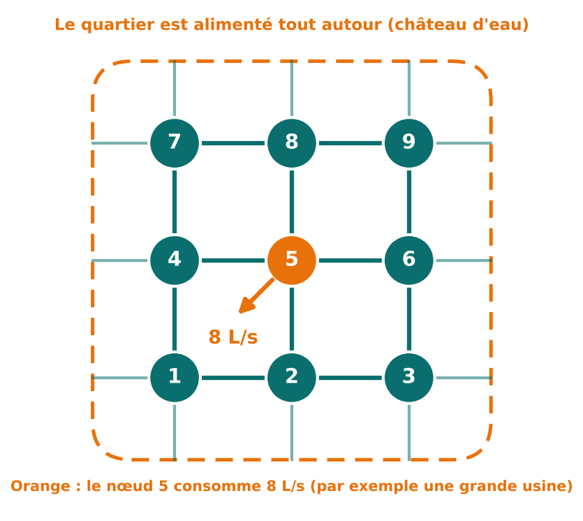
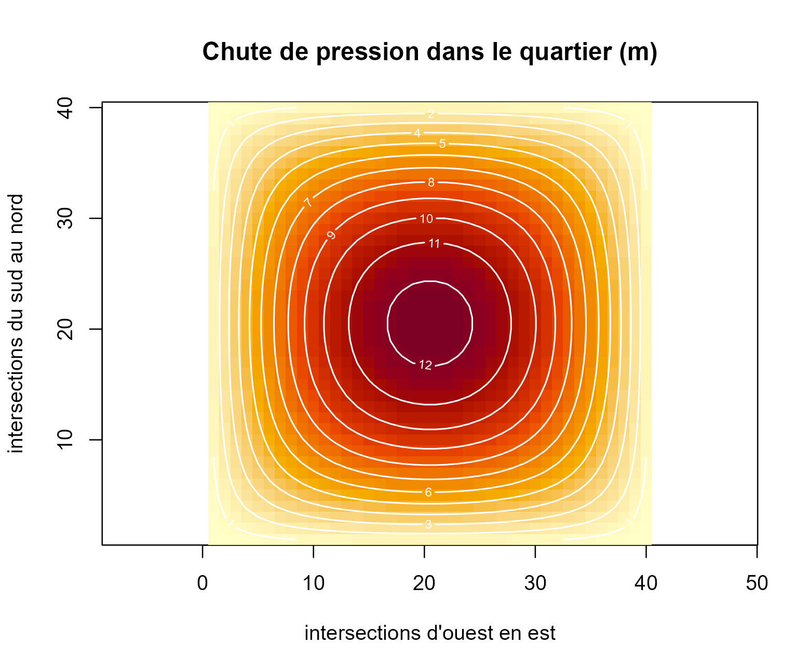
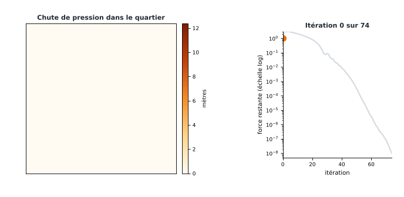

2. Un deuxième exemple : l'eau d'un quartier
eau.RmdDans cette page, vous allez voir :
- que la même méthode calcule les pressions d’un réseau d’eau ;
- un petit exemple de 9 intersections, que l’on lit à la main ;
- un quartier de 1 600 intersections, résolu en une fraction de seconde ;
- pourquoi l’algorithme convient bien aux grands réseaux.
Du circuit au réseau d’eau
Dans la page précédente, nous avions 2 inconnues. Ici, nous passons à un problème bien plus grand, mais le raisonnement est identique. Seuls les mots changent :
| Circuit électrique | Réseau d’eau |
|---|---|
| tension | chute de pression |
| courant injecté | débit consommé |
| fil | tuyau |
| loi des nœuds | l’eau qui arrive à une intersection est égale à l’eau qui en repart |
La situation
Un quartier est alimenté par un château d’eau. Les tuyaux forment une grille. À chaque intersection, des habitants consomment de l’eau. Plus on est loin de l’alimentation, plus la pression baisse.
L’ingénieur veut savoir : de combien la pression chute-t-elle à chaque intersection ? Si elle chute trop, l’eau n’arrive plus aux étages élevés.
Le modèle
Chaque intersection est reliée à ses 4 voisins (haut, bas, gauche, droite). Les intersections du bord sont aussi reliées à l’alimentation, où la chute de pression est nulle.
On écrit, comme pour le circuit, l’équation de chaque intersection. Cela donne une ligne du tableau K avec :
- un 4 sur la diagonale (les 4 tuyaux qui touchent l’intersection) ;
- un −1 pour chacun des 4 voisins ;
- des zéros partout ailleurs (pas de tuyau direct).
Les inconnues u sont les chutes de pression (en mètres). Le second
membre f contient les débits consommés (en L/s). La fonction
reseau_grille() construit K.
Un petit exemple : 3 × 3 intersections
Au centre (intersection 5), une usine consomme 8 L/s. Les autres intersections ne consomment rien.

A <- reseau_grille(3)
as.matrix(A) # le tableau K, 9 lignes et 9 colonnes## [,1] [,2] [,3] [,4] [,5] [,6] [,7] [,8] [,9]
## [1,] 4 -1 0 -1 0 0 0 0 0
## [2,] -1 4 -1 0 -1 0 0 0 0
## [3,] 0 -1 4 0 0 -1 0 0 0
## [4,] -1 0 0 4 -1 0 -1 0 0
## [5,] 0 -1 0 -1 4 -1 0 -1 0
## [6,] 0 0 -1 0 -1 4 0 0 -1
## [7,] 0 0 0 -1 0 0 4 -1 0
## [8,] 0 0 0 0 -1 0 -1 4 -1
## [9,] 0 0 0 0 0 -1 0 -1 4Regardons la ligne 5, celle du centre : un 4 au milieu, et −1 pour les intersections 2, 4, 6 et 8, ses quatre voisins. Les zéros disent « pas de tuyau direct ».
f <- c(0, 0, 0, 0, 8, 0, 0, 0, 0) # l'usine est à l'intersection 5
res <- cg(A, f)
matrix(res$x, nrow = 3) # on remet les 9 valeurs en carré 3 x 3## [,1] [,2] [,3]
## [1,] 0.5 1 0.5
## [2,] 1.0 3 1.0
## [3,] 0.5 1 0.5On lit : 3 m au centre, 1 m pour les quatre voisins, 0,5 m dans les coins. La chute est maximale là où l’on consomme, et elle diminue en s’éloignant. C’est conforme à l’intuition : le résultat est cohérent.
Un vrai quartier : 40 × 40 intersections
Passons à 1 600 intersections, chacune consommant 0,1 L/s (les habitations). Cela fait 1 600 équations à 1 600 inconnues.
N <- 40
A <- reseau_grille(N)
f <- rep(0.1, N * N)
res <- cg(A, f)
res$iterations # nombre de pas## [1] 74
max(res$x) # la plus forte chute de pression (m)## [1] 12.3658674 pas suffisent pour 1 600 inconnues. Voici la carte des pressions :
image(1:N, 1:N, matrix(res$x, N), col = hcl.colors(60, "YlOrRd", rev = TRUE),
xlab = "intersections d'ouest en est", ylab = "intersections du sud au nord",
main = "Chute de pression dans le quartier (m)", asp = 1)
contour(1:N, 1:N, matrix(res$x, N), add = TRUE, col = "white", lwd = 1.2)
Plus la zone est foncée, plus la pression chute. Le centre est le point faible : c’est le plus loin de l’alimentation, qui entoure le quartier. Au bord, la chute est presque nulle. Les traits blancs relient les points de même chute de pression.

L’animation montre la solution se construire : l’algorithme trouve d’abord la forme générale, puis affine.
Pourquoi l’algorithme convient ici
- Le tableau K est creux : chaque ligne n’a que 5 valeurs non nulles sur 1 600. On ne mémorise que celles-là.
- L’algorithme n’a besoin que de multiplier K par une liste de nombres, ce qui est très rapide sur un tableau creux.
- Pour un réseau de centaines de milliers d’intersections, les méthodes qui traitent tout le tableau deviennent trop lourdes.
Limite du modèle. Tous les tuyaux ont ici la même conductance et les pertes de pression sont supposées proportionnelles au débit. Un vrai calcul de réseau tient compte des diamètres, des pompes et des vannes. On retrouve toutefois ce même type de système à l’intérieur des logiciels professionnels.
Suite : 3. Analyser l’algorithme